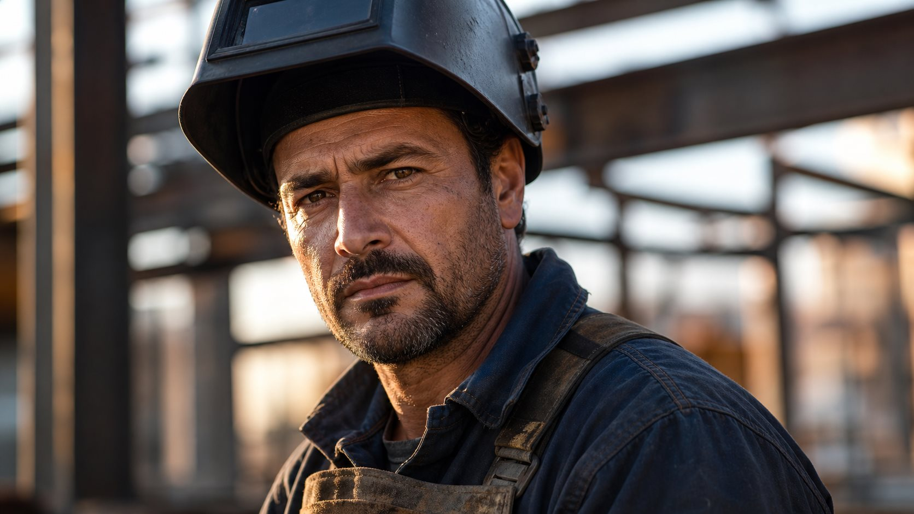

Soldador
Para profissionais com experiência prática em soldadura — obra, indústria ou metalomecânica. Soldadura MIG/MAG, TIG, elétrica e estrutural.
- Obra e estruturas metálicas
- Indústria e manutenção
- Soldadura de tubo e chapa
Canal de candidaturas
A M&A Elo analisa cada candidatura individualmente. Preencha o formulário com experiência, região e disponibilidade — a equipa entra em contacto quando existe projeto compatível com o seu perfil.
Processo
O formulário ajuda a organizar dados, experiência, disponibilidade e documentos. A equipa avalia a informação enviada e entra em contacto apenas quando houver seguimento aplicável.
A equipa avalia cada perfil recebido. O seguimento acontece quando existe projeto compatível com a função e região indicada.
Passo a passo
Soldador, serralheiro, pintor industrial ou candidatura geral para outras funções ligadas a obra, indústria e metalomecânica.
Informe experiência, região, disponibilidade de deslocação e documentos quando existirem. Quanto mais completo, melhor a análise.
A equipa M&A Elo avalia os dados enviados. Não existe decisão automática de contratação ou colocação.
Salários, horários e condições contratuais são informados pela equipa após análise, quando aplicável e quando existir projeto compatível.

Perfil de candidato
A M&A Elo procura candidatos com experiência prática comprovada — não perfis genéricos. O processo valoriza disponibilidade real, documentação em ordem e clareza sobre a função pretendida.
Formulários
Cada formulário é específico à função — selecione o mais próximo da sua experiência. Para dúvidas antes de avançar, contacte pelo WhatsApp.
Para profissionais com experiência prática em soldadura — obra, indústria ou metalomecânica. Soldadura MIG/MAG, TIG, elétrica e estrutural.
Para profissionais de serralharia, montagem metálica e funções equivalentes em obra ou oficina industrial.
Para profissionais com experiência em pintura industrial, construção civil ou preparação e tratamento de superfície.
Para outras funções ligadas a obra, indústria ou metalomecânica. Exemplos orientativos no formulário — descreva a sua experiência real.